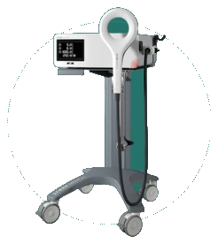

Tissue regeneration
Magnetolith
High-intensity EMTT technology
Stimulates natural muscular and joint recovery through high-frequency magnetic pulses, accelerating functional restoration and relieving persistent pain.